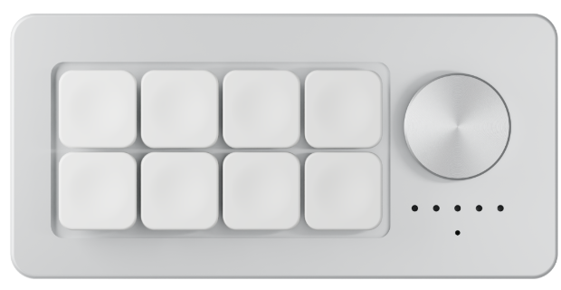

正在提炼当前文档核心纲要...
硬件外观与按键功能无缝合一：点击键帽或下方卡片均可调配，物理按键与旋钮实时联动高亮。

用 USB 数据线连接键盘和电脑，App 会自动检测。
打开键盘，在系统蓝牙中选择 “EasyInput AI”。首次使用可直接配对；已配对设备请点击重新连接。
蓝牙麦克风不需要配网。Wi-Fi 麦克风与无线开机音效需要键盘网络，连接后可在“网络”页设置。
• 确保使用支持数据传输的 Type-C 数据线
• 确认设备管理器中 COM3 端口正常就绪
• 避免其他串口助手程序同时占用 COM3